전기공사기사 (2015-03-08 기출문제)
1과목: 전기응용 및 공사재료
1. 1000[lm]의 광속을 발산하는 전등 10개를 1000m2인 방에 설치하였다. 조명률 0.5, 감광 보상률 1이라 하면 평균 조도[lx]는 얼마인가?
- 2
- 5
- 20
- 50
(정답률: 80%)

2. 3상 4극 유도전동기를 입력 주파수 60 Hz, 슬립 3%로 운전할 경우 회전자 주파수[Hz]는 ?
- 0.18
- 0.24
- 1.8
- 2.4
(정답률: 78%)
3. 전기의 전도와 열의 전도는 서로 근사하여 온도를 전압, 열류를 전류와 같이 생각하여 열전도의 계산에 사용될 때의 열류의 단위로 옳은 것은?
- J
- deg
- deg/W
- W
(정답률: 66%)
4. 다음 발열체 중 최고 사용온도가 가장 높은 것은?
- 니크롬 제 1종
- 니크롬 제 2종
- 철-크롬 제 1종
- 탄화규소 발열체
(정답률: 76%)
5. 사이리스터의 게이트 트리거 회로로 적합하지 않은 것은?
- UJT 발진 회로
- DIAC에 의한 트리거 회로
- PUT 발진회로
- SCR 발진회로
(정답률: 64%)
6. 전기로의 전기 가열 방식 중 흑연화로, 가보런덤로의 가열 방식은?
- 아크로
- 유도로
- 간접식 저항로
- 직접식 저항로
(정답률: 80%)
7. 직류 전차선로에서 전압강하 및 레일의 전위상승이 현저한 경우에 귀선의 전기저항을 감소시켜 전식의 피해를 줄이기 위해 설치하는 것으로 가장 옳은 것은?
- 레일본드
- 보조귀선
- 크로스 본드
- 압축 본드
(정답률: 69%)
8. 전기 분해에 의해 일정한 전하량을 통과했을 때 얻어지는 물질의 양은 어느것에 비례하는가?
- 화학당량
- 원자가
- 전류
- 전압
(정답률: 79%)
9. SCR에 대한 설명 중 틀린 것은?
- 3개 접합면을 가진 4층 다이오드 형태로 되어있다.
- 게이트 단자에 펄스신호가 입력되는 순간부터 도통된다.
- 제어각이 작을수록 부하에 흐르는 전류 도통각이 커진다.
- 위상제어의 최대 조절범위는 0°~ 90°이다.
(정답률: 80%)
10. 고주파 유도가열의 용도가 아닌 것은?
- 목재의 고주파 가공
- 고주파 납땜
- 관 용접
- 단조
(정답률: 71%)
11. 피뢰설비 설치에 관한 사항으로 틀린 것은? (문제 오류로 실제 시험에서는 1, 2, 4번이 정답처리 되었습니다. 여기서는 4번을 누르면 정답 처리 됩니다.)
- 수뢰부는 동선을 기준으로 35mm2이상
- 인하도선은 동선을 기준으로 16mm2이상
- 접지극은 동선을 기준으로 50mm2이상
- 돌침은 건축물의 맨 윗부분으로부터 20cm 이상 돌출
(정답률: 79%)
12. 버스덕트의 폭이 600mm인 경우 덕트 강판의 두께는 몇 mm 이상인가?
- 1.2
- 1.4
- 2.0
- 2.3
(정답률: 56%)
13. 가공전선로에 사용하는 애자가 구비해야 할 조건이 아닌 것은?
- 이상전압에 견디고, 내부 이상전압에 대해 충분한 절연 강도를 가질 것
- 전선의 장력, 풍압, 빙설 등의 외력에 의한 하중에 견딜 수 있는 기계적 강도를 가질 것
- 비, 눈, 안개 등에 대하여 충분한 전기적 표면저항이 있어서 누설전류가 흐르지 못하게 할 것
- 온도나 습도의 변화에 대해 전기적 및 기계적 특성의 변화가 클 것
(정답률: 91%)
14. 배전반 및 분전반 함이 내 아크성, 난열성의 합성수지로 되어 있는 것은 몇 mm 이상인가?
- 1.2
- 1.5
- 1.8
- 2.0
(정답률: 65%)
15. 5[t]의 하중을 매분 30m의 속도로 권상할 때, 권상 전동기의 용량은 약 몇 kW 인가? (단, 장치의 효율은 70%, 전동기 출력의 여유를 20%로 계산한다.)
- 40
- 42
- 44
- 46
(정답률: 76%)
16. 수변전 설비 회로의 특고압 및 고압을 저압으로 변성하는 것은?
- 계기용 변압기
- 과전류 계전기
- 계기용 변류기
- 전력 콘덴서
(정답률: 90%)
17. 알칼리 축전지의 특징에 대한 설명으로 틀린 것은?
- 전지의 수명이 납축전지보다 길다.
- 진동, 충격에 강하다.
- 급격한 충·방전 및 높은 방전율을 견디기 어렵다.
- 소형 경량이며, 유지관리가 편리하다.
(정답률: 85%)
18. 나전선 상호간을 접속하는 경우 인장하중에 대한 내용으로 옳은 것은?
- 20% 이상 감소시키지 않을 것
- 40% 이상 감소시키지 않을 것
- 60% 이상 감소시키지 않을 것
- 80% 이상 감소시키지 않을 것
(정답률: 83%)
19. 램프효율이 우수하고 단색광이므로 안개지역에서 가장 많이 사용되는 광원은?
- 나트륨등
- 메탈 할라이드등
- 수은등
- 크세논 등
(정답률: 90%)
20. 주상 변압기 1차측에 설치하여 변압기의 보호와 개폐에 사용하는 것은?
- 단로기(DS)
- 진공 스위치(VCB)
- 선로 개폐기(LS)
- 컷아웃 스위치(COS)
(정답률: 76%)
2과목: 전력공학
21. 3상 송전선로의 각 상의 대지 정전용량을 Ca, Cb 및 Cc라 할 때, 중성점 비접지 시의 중성점과 대지간의 전압은? (단, E는 상전압이다.)
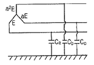
- (Ca+Cb+Cc)E
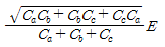
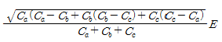
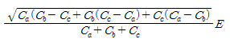
(정답률: 32%)
22. 전력 계통의 전압을 조정하는 가장 보편적인 방법은?
- 발전기의 유효전력 조정
- 부하의 유효전력 조정
- 계통의 주파수 조정
- 계통의 무효전력 조정
(정답률: 27%)
23. 폐쇄 배전반을 사용하는 주된 이유는 무엇인가?
- 보수의 편리
- 사람에 대한 안전
- 기기의 안전
- 사고파급 방지
(정답률: 31%)
24. 송전 계통의 안정도를 향상시키는 방법이 아닌 것은?
- 직렬 리액턴스를 증가시킨다.
- 전압 변동을 적게 한다.
- 중간 조상방식을 채용한다.
- 고장 전류를 줄이고, 고장 구간을 신속히 차단한다.
(정답률: 35%)
25. 66kV 송전선로에서 3상 단락고장이 발생하였을 경우 고장점에서 본 등가 정상임피던스가 자기용량 40[MVA]기준으로 20%일 경우 고장전류는 정격전류의 몇 배가 되는가?
- 2
- 4
- 5
- 8
(정답률: 24%)
26. 조압수조의 설치 목적은?
- 조속기의 보호
- 수차의 보호
- 여수의 처리
- 수압관의 보호
(정답률: 24%)
27. 망상(network) 배전방식의 장점이 아닌것은?
- 전압변동이 적다.
- 인축의 접지사고가 적어진다.
- 부하의 증가에 대한 융통성이 크다.
- 무정전 공급이 가능하다.
(정답률: 34%)
28. 정전용량 0.01㎌/㎞, 길이 173.2㎞, 선간전압 60kV, 주파수 60Hz인 3상 송전선로의 충전전류는 약 몇 A인가?
- 6.3
- 12.5
- 22.6
- 37.2
(정답률: 30%)
29. 원자로의 냉각재가 갖추어야 할 조건이 아닌 것은?
- 열용량이 적을 것
- 중성자의 흡수가 적을 것
- 열전도율 및 열전달 계수가 클 것
- 방사능을 띠기 어려울 것
(정답률: 26%)
30. 접지봉으로 탑각의 접지저항값을 희망하는 접지저항값까지 줄일 수 없을 때 사용하는 것은?
- 가공지선
- 매설지선
- 크로스 본드선
- 차폐선
(정답률: 32%)
31. 임피던스 Z1, Z2 및 Z3를 그림과 같이 접속한 선로의 A쪽에서 전압파 E가 진행해 왔을 때 접속점 B에서 무반사로 되기 위한 조건은?
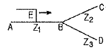
- Z1=Z2+Z3
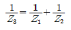
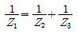
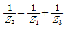
(정답률: 32%)
32. 선로고장 발생시 고장전류를 차단할 수 없어 리클로저와 같이 차단 기능이 있는 후비보호 장치와 직렬로 설치되어야 하는 장치는?
- 배선용 차단기
- 유입 개폐기
- 컷아웃 스위치
- 섹셔널라이저
(정답률: 32%)
33. 다중접지 3상 4선식 배전선로에서 고압측(1차측) 중성선과 저압측(2차측) 중성선을 전기적으로 연결하는 목적은?
- 저압측의 단락 사고를 검출하기 위함
- 저압측의 접지 사고를 검출하기 위함
- 주상 변압기의 중성선측 부싱을 생략하기 위함
- 고저압 혼촉 시 수용가에 침입하는 상승전압을 억제하기 위함
(정답률: 35%)
34. % 임피던스에 대한 설명으로 틀린 것은?
- 단위를 갖지 않는다.
- 절대량이 아닌 기준량에 대한 비를 나타낸 것이다.
- 기기 용량의 크기와 관계없이 일정한 범위를 갖는다.
- 변압기나 동기기의 내부 임피던스에만 사용할 수 있다.
(정답률: 28%)
35. 송전단 전압이 66kV, 수전단 전압이 60kV인 송전선로에서 수전단의 부하를 끊을 경우에 수전단 전압이 63kv가 되었다면 전압 변동률은 몇 %가 되는가?
- 4.5
- 4.8
- 5.0
- 10.0
(정답률: 22%)
36. 피뢰기의 직렬 갭(gap)의 작용으로 가장 옳은 것은?
- 이상전압의 진행파를 증가시킨다.
- 상용주파수의 전류를 방전시킨다.
- 이상전압이 내습하면 뇌전류를 방전하고, 상용주파수의 속류를 차단하는 역할을 한다.
- 뇌전류 방전시의 전위상승을 억제하여 절연파괴를 방지한다.
(정답률: 33%)
37. 전력선에 의한 통신선로의 전자유도장해 발생요인은 주로 무엇 때문인가??
- 지락사고 시 영상전류가 커지기 때문에
- 전력선의 전압이 통신선로보다 높기 때문에
- 통신선에 피뢰기를 설치하였기 때문에
- 전력선과 통신선로 사이의 상호인덕턴스가 감소하였기 때문에
(정답률: 30%)
38. 3000kW, 역률 75%(늦음)의 부하에 전력을 공급하고 있는 변전소에 콘덴서를 설치하여 역률을 93%로 향상시키고자 한다. 필요한 전력용 콘덴서의 용량은 약 몇 kVA인가?
- 1460
- 1540
- 1620
- 1730
(정답률: 28%)
39. 배전계통에서 전력용 콘덴서를 설치하는 목적으로 가장 타당한 것은?
- 배전선의 전력손실 감소
- 전압강하 증대
- 고장 시 영상전류 감소
- 변압기 여유율 감소
(정답률: 29%)
40. 역률 개선용 콘덴서를 부하와 병렬로 연결하고자 한다. △결선 방식과 Y결선 방식을 비교하면 콘덴서의 정전용량[㎌]의 크기는 어떠한가?
- ㎌결선 방식과 Y결선 방식은 동일하다.
- Y결선 방식이 ㎌결선 방식의 1/2이다.
- ㎌결선 방식이 Y결선 방식의 1/3이다.
- Y결선 방식이 ㎌결선 방식의 1/√3이다.
(정답률: 31%)
3과목: 전기기기
41. 유도 전동기의 2차 여자시에 2차 주파수와 같은 주파수의 전압 Ec를 2차에 가한 경우 옳은 것은? (단, sE2는 유도기의 2차 유도 기전력이다.)
- Ec를 sE2와 반대위상으로 가하면 속도는 증가한다.
- Ec를 sE2보다 90° 위상을 빠르게 가하면 역률은 개선된다.
- Ec를 sE2와 같은 위상으로 Ec
- Ec를 sE2와 같은 위상으로 Ec=sE2의 크기로 가하면 동기속도 이상으로 회전한다.
(정답률: 20%)
42. 정격이 10HP, 200V인 직류 분권 전동기가 있다. 전부하 전류는 46A, 전기자 저항은 0.25Ω, 계자 저항은 100Ω이며, 브러시 접촉에 의한 전압강하는 2V, 철손과 마찰손을 합쳐 380W이다. 표유부하손을 정격출력의 1%라 한다면 이 전동기의 효율[%]은? (단, 1HP=746W이다.)
- 84.5
- 82.5
- 80.2
- 78.5
(정답률: 11%)
43. 자동제어장치에 쓰이는 서보모터의 특성을 나타내는 것 중 틀린 것은?
- 빈번한 시동, 정지, 역전등의 가혹한 상태에 견디도록 견고하고 큰 돌입 전류에 견딜 것
- 시동 토크는 크나, 회전부의 관성 모멘트가 작고 전기적 시정수가 짧을것
- 발생 토크는 입력신호에 비례하고 그 비가 클 것
- 직류 서보 모터에 비하여 교류 서보 모터의 시동 토크가 매우 클 것
(정답률: 27%)
44. 직류 전동기의 제동법 중 동일 제동법이 아닌 것은?
- 회전자의 운동 에너지를 전기 에너지로 변환 한다.
- 전기 에너지를 저항에서 열에너지로 소비시켜 제동시킨다.
- 복권 전동기는 직권 계자 권선의 접속을 반대로 한다.
- 전원의 극성을 바꾼다.
(정답률: 23%)
45. 저항 부하인 사이리스터 단상 반파 정류기로 위상 제어를 할 경우 점호각 0°에서 60°로 하면 다른 조건이 동일한 경우 출력 평균 전압은 몇 배가 되는가?
- 3/4
- 4/3
- 3/2
- 2/3
(정답률: 20%)
46. 3상 동기 발전기를 병렬운전 시키는 경우 고려하지 않아도 되는 조건은?
- 기전력의 파형이 같을 것
- 기전력의 주파수가 같을 것
- 회전수가 같을 것
- 기전력의 크기가 같을 것
(정답률: 31%)
47. 병렬운전을 하고 있는 두 대의 3상 동기 발전기 사이에 무효순환전류가 흐르는 경우는?
- 여자 전류의 변화
- 부하의 증가
- 부하의 감소
- 원동기 출력변화
(정답률: 27%)
48. 단상 변압기에서 전부하의 2차 전압은 100V이고, 전압 변동률은 4%이다. 1차 단자 전압[V]은? (단, 1차와 2차 권선비는 20:1이다.)
- 1920
- 2080
- 2160
- 2260
(정답률: 27%)
49. 유도 전동기의 속도제어법 중 저항제어와 관계가 없는 것은?
- 농형 유도 전동기
- 비례추이
- 속도 제어가 간단하고 원활함
- 속도 조정 범위가 작음
(정답률: 27%)
50. 변압기 여자회로의 어드미턴스 Y0[℧]를 구하면? (단, I0는 여자전류, Ii는 철손전류, I∅는 자화전류, g0는 콘덕턴스, V1는 인가전압이다.)
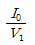
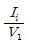
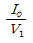
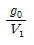
(정답률: 23%)
51. 전부하 전류 1A, 역률 85%, 속도 7500 rpm이고 전압과 주파수가 100V, 60Hz인 2극 단상 직권 정류자 전동기가 있다. 전기자와 직권 계자 권선의 실효저항의 합이 40Ω이라 할 때 전부하시 속도기전력[V]은? (단, 계자 자속은 정현적으로 변하며 브러시는 중성축에 위치하고 철손은 무시한다.)
- 34
- 45
- 53
- 64
(정답률: 14%)
52. 10kVA, 2000/100V 변압기에서 1차에 환산한 등가 임피던스는 6.2+j7Ω이다. 이 변압기의 퍼센트 리액턴스 강하는?
- 3.5
- 0.175
- 0.35
- 1.75
(정답률: 22%)
53. 농형 유도전동기에 주로 사용되는 속도 제어법은?
- 극수 제어법
- 2차여자 제어법
- 2차 저항 제어법
- 종속 제어법
(정답률: 26%)
54. 역률이 가장 좋은 전동기는?
- 농형 유도 전동기
- 반발기동 전동기
- 동기 전동기
- 교류 정류자 전동기
(정답률: 32%)
55. 동기기의 전기자 권선이 매극 매상당 슬롯수가 4, 상수가 3인 권선의 분포계수는 얼마인가? (단, sin7.5°=0.13⑤, sin15°=0.2588, sin22.5°=0.3827, sin30°=0.5)
- 0.487
- 0.844
- 0.866
- 0.958
(정답률: 21%)
56. 전압 변동률이 작은 동기 발전기는?
- 동기 리액턴스가 크다.
- 전기자 반작용이 크다.
- 단락비가 크다.
- 자기 여자 작용이 크다.
(정답률: 30%)
57. 3상 농형 유도전동기를 전전압 기동할 때의 토크는 전부하시의
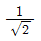
배이다. 기동 보상기로 전전압의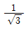
로 기동하면 토크는 전부하 토크의 몇 배가 되는가? (단, 주파수는 일정)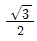
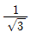
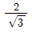
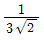
(정답률: 21%)
58. 3상 유도전동기의 2차 입력 P2, 슬립이 s일 때의 2차 동손 Pc2은?
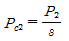
- Pc2=sP2
- Pc2=s2P2
- Pc2=(1-s)P2
(정답률: 28%)
59. 게이트 조작에 의해 부하전류 이상으로 유지 전류를 높일 수 있어 게이트 턴온, 턴오프가 가능한 사이리스터는?
- SCR
- GTO
- LASCR
- TRIAC
(정답률: 24%)
60. 다음 그림과 같이 단상 변압기를 단권 변압기로 사용한다면 출력단자의 전압[V]은? (단, V1n[V]를 1차 정격전압이라 하고, V2n[V]를 2차 정격전압이라 한다.)
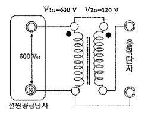
- 600
- 120
- 480
- 720
(정답률: 21%)
4과목: 회로이론 및 제어공학
61. 다음 중
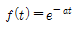
의 z변환은?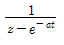
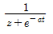
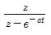
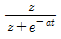
(정답률: 29%)
62. 다음은 시스템의 블록선도이다. 이 시스템이 안정한 시스템이 되기 위한 K의 범위는?
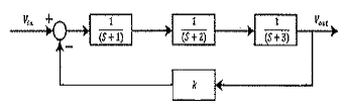
- -6<K<60
- 0<K<60
- -1<K<3
- 0<K<3
(정답률: 18%)
63.
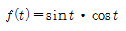
를 라플라스 변환하면?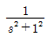
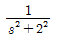
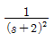
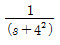
(정답률: 22%)
64. 다음의 블록선도와 같은 것은?
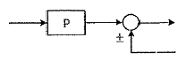
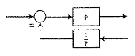
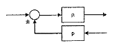
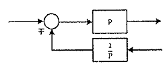
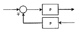
(정답률: 24%)
65. 자동제어계의 기본적 구성에서 제어요소는 무엇으로 구성 되는가?
- 비교부와 검출부
- 검출부와 조작부
- 검출부와 조절부
- 조절부와 조작부
(정답률: 31%)
66. 다음과 같은 계전기 회로는 어떤 회로인가?
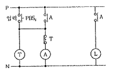
- 쌍안정 회로
- 단안정 회로
- 인터록 회로
- 일치 회로
(정답률: 24%)
67. 응답이 최종값의 10%에서 90%까지 되는데 요하는 시간은?
- 상승 시간(rising time)
- 지연 시간(delay time)
- 응답 시간(response time)
- 정정 시간(setting time)
(정답률: 31%)
68.
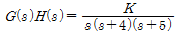
에서 근궤적의 개수는?- 1
- 2
- 3
- 4
(정답률: 29%)
69. 그림과 같은 RC 회로에서 전압 vi(t)를 입력으로 하고 전압 v0(t)를 출력으로 할 때, 이에 맞는 신호흐름 선도는? (단, 전달함수의 초기값은 0이다.)
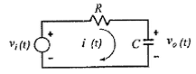
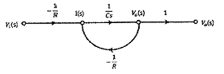
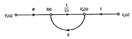
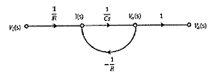
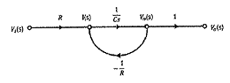
(정답률: 21%)
70.
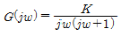
의 나이퀴스트 선도는? (단, K>0 이다.)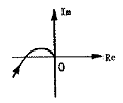
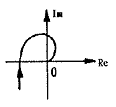
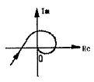
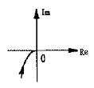
(정답률: 28%)
71. 대칭 n상에서 선전류와 상전류 사이의 위상차[rad]는?
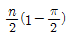
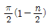
(정답률: 24%)
72. 다음과 같은 왜형파의 실효값은?
- 5√2
- 10/√6
- 15
- 35
(정답률: 18%)
73. 어느 소자에 걸리는 전압은 v=3cos 3t[V]이고, 흐르는 전류 i=-2sin(3t+10°)[A]이다. 전압과 전류간의 위상차는?
- 10°
- 30°
- 70°
- 100°
(정답률: 25%)
74. 그림과 같은 단위 계단 함수는?
- u(t)
- u(t-a)
- u(a-t)
- -u(t-a)
(정답률: 30%)
75. 권수가 2000회이고, 저항이 12Ω인 솔레노이드에 전류 10A를 흘릴 때, 자속이 6×10-2[wb]가 발생하였다. 이 회로의 시정수[sec]는?
- 1
- 0.1
- 0.01
- 0.001
(정답률: 20%)
76. 어떤 2단자쌍 회로망의 Y 파라미터가 그림과 같다. a-a'단자간에 V1=36V, b-b' 단자간에 V2=24V의 정전압원을 연결하였을 때 I1,I2값은? (단, Y파라미터의 단위는 이다.)
- I1=4[A], I2=5[A]
- I1=5[A], I2=4[A]
- I1=1[A], I2=4[A]
- I1=4[A], I2=1[A]
(정답률: 23%)
77. 자기 인덕턴스 0.1H인 코일에 실효값 100V, 60Hz, 위상각 0°인 전압을 가했을 때 흐르는 전류의 실효값은 약 몇 A인가?
- 1.25
- 2.24
- 2.65
- 3.41
(정답률: 24%)
78. 2전력계법으로 평형 3상 전력을 측정하였더니 한쪽의 지시가 500W, 다른 한쪽의 지시가 1500W 이었다. 피상 전력은 약 몇 VA인가?
- 2000
- 2310
- 2646
- 2771
(정답률: 26%)
79. 위상 정수가 인 선로의 1Mhz에 대한 전파속도는 몇 m/s인가?
- 1.6×107
- 3.2×107
- 5.0×107
- 8.0×107
(정답률: 22%)
80. 3상 불평형 전압에서 역상전압 50V, 정상전압 250V 및 영상 전압 20V이면, 전압 불평형률은 몇 %인가?
- 10
- 15
- 20
- 25
(정답률: 31%)
5과목: 전기설비기술기준 및 판단기준
81. 저압 옥내배선 합성 수지관 공사시 연선이 아닌 경우 사용할 수 있는 전선의 최대 단면적은 몇 mm2인가? (단, 알루미늄선은 제외한다.)
- 4
- 6
- 10
- 16
(정답률: 23%)
82. 특고압 가공전선로에서 발생하는 극저주파 전계는 지표상 1m에서 전계가 몇 kV/m 이하가 되도록 시설하여야 하는가?
- 3.5
- 2.5
- 1.5
- 0.5
(정답률: 18%)
83. 내부 고장이 발생하는 경우를 대비하여 자동차단장치 또는 경보장치를 시설하여야 하는 특고압용 변압기의 뱅크 용량의 구분으로 알맞은 것은?
- 5000kVA 미만
- 5000kVA 이상 10000kVA 미만
- 10000kVA 이상
- 10000kVA 이상 15000kVA 미만
(정답률: 25%)
84. 사용전압 60kV 이하의 특고압 가공전선로에서 유도 장해를 방지하기 위하여 전화 선로의 길이 12km마다 유도 전류가 몇 ㎂를 넘지 않아야 하는가?
- 1
- 2
- 3
- 5
(정답률: 31%)
85. 지지물이 A종 철근 콘크리트주일 때, 고압 가공전선로의 경간은 몇 m 이하인가?
- 150
- 250
- 400
- 600
(정답률: 26%)
86. 태양전지 모듈에 사용하는 연동선의 최소 단면적[mm2]은?(오류 신고가 접수된 문제입니다. 반드시 정답과 해설을 확인하시기 바랍니다.)
- 1.5
- 2.5
- 4.0
- 6.0
(정답률: 26%)
87. 접지 공사의 종류가 아닌 것은?(오류 신고가 접수된 문제입니다. 반드시 정답과 해설을 확인하시기 바랍니다.)
- 특고압 계기용 변성기의 2차측 전로에 제 1종 접지 공사를 하였다.
- 특고압 전로와 저압전로를 결합하는 변압기의 저압측 중성점에 제 3종 접지 공사를 하였다.
- 고압 전로와 저압 전로를 결합하는 변압기의 저압측 중성점에 제 2종 접지 공사를 하였다.
- 고압 계기용 변성기의 2차측 전로에 제 3종 접지공사를 하였다.
(정답률: 19%)
88. 교류 전차선과 식물 사이의 이격 거리는 몇 m 이상인가?(오류 신고가 접수된 문제입니다. 반드시 정답과 해설을 확인하시기 바랍니다.)
- 1.0
- 1.5
- 2.0
- 2.5
(정답률: 26%)
89. 제 1종 접지공사 또는 제 2종 접지공사에 사용하는 접지선을 사람이 접촉할 우려가 있는 곳에 시설하는 기준으로 틀린 것은?
- 접지극은 지하 75cm 이상으로 하되 동결 깊이를 감안하여 매설한다.
- 접지선은 절연전선(옥외용 비닐 절연전선 제외), 캡타이어 케이블 또는 케이블(통신용 케이블 제외)을 사용한다.
- 접지선의 지하 60cm로부터 지표상 2m 까지의 부분은 합성수지관 등으로 덮어야 한다.
- 접지선을 시설한 지지물에는 피뢰침용 지선을 시설하지 않아야 한다.
(정답률: 25%)
90. 고압 및 특고압 전로 중 전로에 지락이 생긴 경우에 자동적으로 전로를 차단하는 장치를 하지 않아도 되는 곳은?
- 발전소, 변전소 또는 이에 준하는 곳의 인출구
- 수전점에서 수전하는 전기를 모두 그 수전점에 속하는 수전 장소에서 변성하여 사용하는 경우
- 다른 전기사업자로부터 공급을 받는 수전점
- 단권 변압기를 제외한 배전용 변압기의 시설장소
(정답률: 23%)
91. 사무실 건물의 조명설비에 사용되는 백열전등 또는 방전등에 전기를 공급하는 옥내전로의 대지전압은 몇 V 이하인가?
- 250
- 300
- 350
- 400
(정답률: 33%)
92. 전력보안 통신 설비 시설시 가공전선로로부터 가장 주의하여야 하는 것은?
- 전선의 굵기
- 단락 전류에 의한 기계적 충격
- 전자 유도 작용
- 와류손
(정답률: 29%)
93. 가공전선로의 지지물에 하중이 가하여지는 경우에 그 하중을 받는 지지물의 기초 안전율은 특별한 경우를 제외하고 최소 얼마이상인가?
- 1.5
- 2
- 2.5
- 3
(정답률: 23%)
94. 가공 전선로의 지지물에 지선을 시설하려고 한다. 이 지선의 시설기준으로 옳은 것은?
- 소선 지름 : 2.0mm, 안전율 : 2.5, 인장하중 : 2.11kN
- 소선 지름 : 2.6mm, 안전율 : 2.5, 인장하중 : 4.31kN
- 소선 지름 : 1.6mm, 안전율 : 2.0, 인장하중 : 4.31kN
- 소선 지름 : 2.6mm, 안전율 : 1.5, 인장하중 : 3.21kN
(정답률: 32%)
95. 22.9kV의 가공 전선로를 시가지에 시설하는 경우 전선의 지표상 높이는 최소 몇 m 이상인가? (단, 전선은 특고압 절연전선을 사용한다.)
- 6
- 7
- 8
- 10
(정답률: 23%)
96. 가공전선로의 지지물에 시설하는 지선으로 연선을 사용할 경우 소선은 최소 몇 가닥 이상이어야 하는가?
- 3
- 5
- 7
- 9
(정답률: 33%)
97. 지중전선로를 직접 매설식에 의하여 시설할 때, 중량물의 압력을 받을 우려가 있는 장소에 지중 전선을 견고한 트라프 기타 방호물에 넣지 않고도 부설할 수 있는 케이블은?
- 염화비닐 절연 케이블
- 폴리 에틸렌 외장 케이블
- 콤바인덕트 케이블
- 알루미늄피 케이블
(정답률: 31%)
98. 중성점 직접 접지식 전로에 연결되는 최대사용전압이 69kV인 전로의 절연내력 시험 전압은 최대 사용전압의 몇배인가?
- 1.25
- 0.92
- 0.72
- 1.5
(정답률: 25%)
99. 옥내 저압전선으로 나전선의 사용이 기본적으로 허용되지 않는 것은?
- 애자 사용 공사의 전기로용 전선
- 유희용 전차에 전기 공급을 위한 접촉전선
- 제분 공장의 전선
- 애자사용 공사의 전선 피복 절연물이 부식하는 장소에 시설하는 전선
(정답률: 28%)
100. 광산 기타 갱도안의 시설에서 고압 배선은 케이블을 사용하고 금속제의 전선 접속함 및 케이블 피복에 사용하는 금속제의 접지공사는 제 몇 종 접지공사인가?(오류 신고가 접수된 문제입니다. 반드시 정답과 해설을 확인하시기 바랍니다.)
- 제 1종 접지공사
- 제 2종 접지공사
- 제 3종 접지공사
- 특별 제 3종 접지 공사
(정답률: 15%)
감광 보상률은 인간의 눈이 어떤 조도에서도 동일한 밝기를 느끼지 못하고, 낮은 조도에서는 더 밝게 느끼는 경향이 있기 때문에 이를 보상하기 위한 값이다. 감광 보상률이 1이면 보정이 없는 상태이므로, 이 문제에서는 보정이 필요하지 않다.
따라서, 전등 10개가 설치된 1000m2인 방에서의 총 광속은 10,000[lm]이다. 이를 조명률 0.5로 나누면 방 안에 도달하는 광속은 5,000[lm]이 된다. 이 값을 방의 면적 1000[m2]으로 나누면 평균 조도는 5[lx]가 된다. 따라서 정답은 "5"이다.